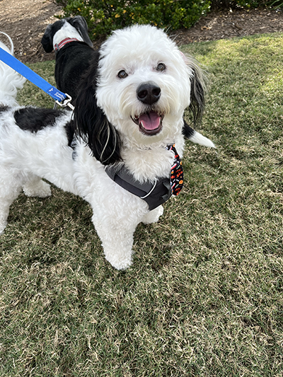

This webpage is all about my dog.
Toby is a two year old mini bernedoodle. He is super energetic and loves to be outside no matter the weather. He has one sitster named Leia (she's a beagle boston terrier mix) and she is 15 years old. He also loves to run and play with other dogs.
"Do you want to go on a walk?"
| Favorite Weather | Snow | |
|---|---|---|
| Favorite Toy | Rope | |
| Favorite Dog | Leia | |
| Favorite Animal | Bunny | |
| Favorite Part of the House | The Window | |
| Favorite Place | The Car | |
Email: tobyfanpage@gmail.com
Phone Number: 123-465-789